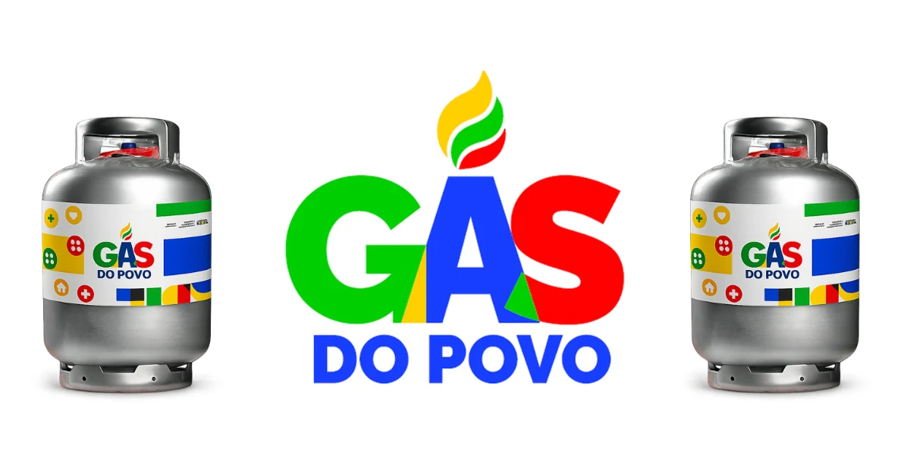
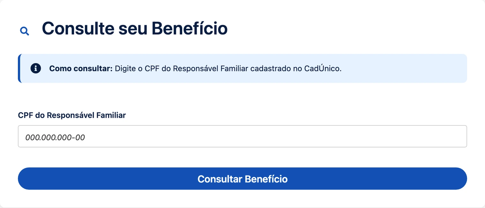
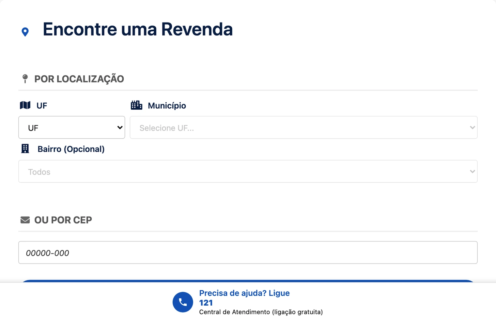
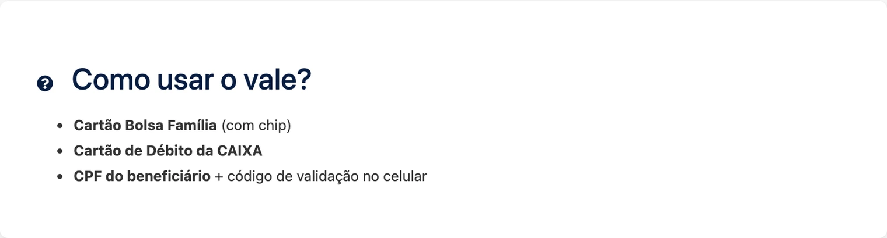

O Gás do Povo chegou para tirar o peso do botijão do orçamento de quem ganha pouco. Neste guia você vê o que é o programa, quem tem direito, quantos botijões a sua família recebe, como retirar na revenda e o cuidado que evita perder o vale. Vamos ao passo a passo.
O que é o Gás do Povo

O Gás do Povo é um programa social do Ministério do Desenvolvimento Social (MDS) que garante o botijão de gás de 13 kg gratuito para famílias inscritas no CadÚnico. Não é dinheiro na conta: o governo emite um vale eletrônico no nome do responsável familiar, e a família troca esse vale por um botijão cheio na revenda credenciada, sem pagar nada.
O programa nasceu para aliviar uma das despesas que mais apertam a conta no fim do mês. Para muita família, o botijão pesa uma fatia relevante da renda.
Como funciona o vale
Antes de correr para a revenda, vale entender a mecânica do benefício:
- Formato: vale eletrônico, não é depósito em dinheiro
- Valor: cobre o botijão de 13 kg cheio, sem diferença a pagar
- Onde usar: em qualquer revenda credenciada, mais de 60 mil pontos no país
- Repetição: o vale volta ao longo do ano, conforme o tamanho da família
- Validade: cada vale dura 4 meses e não acumula
Quem tem direito ao Gás do Povo
Os critérios vêm do MDS e são aplicados por cruzamento automático com a base do CadÚnico:
- Renda mensal por pessoa de até meio salário mínimo, hoje em torno de R$ 759
- Inscrição ativa no CadÚnico, atualizada nos últimos 2 anos
- Prioridade para famílias do Bolsa Família, com renda por pessoa de até R$ 218
- Quem já recebia o Auxílio Gás migra automaticamente, sem novo cadastro
Não existe inscrição separada no Gás do Povo. O sistema do MDS lê o CadÚnico e libera para quem se encaixa. Quem já recebe Bolsa Família ou BPC entra primeiro na fila.
Você será redirecionado para o site oficial
Quantos botijões sua família recebe
A quantidade acompanha o tamanho da casa, porque família maior cozinha mais:
- 1 ou 2 pessoas: até 3 botijões por ano, cerca de um a cada 4 meses
- 3 pessoas: até 4 botijões por ano, cerca de um a cada 3 meses
- 4 pessoas ou mais: até 6 botijões por ano, cobrindo o ano inteiro
Na ponta do lápis, uma família de 4 pessoas devolve ao orçamento mais de R$ 700 por ano só em gás. É dinheiro que deixa de sair do bolso e vira conta de luz paga em dia, mercado ou uma folga para emergências.
Passo a passo para retirar o botijão
Você será redirecionado para o site oficial
A retirada foi desenhada para ser simples, mesmo para quem tem pouca familiaridade com aplicativo de banco. O primeiro passo é confirmar seus dados no canal oficial do programa:
- Consulte o seu CPF no portal oficial. A consulta usa o CPF do responsável familiar, aquele que assina o cadastro no CadÚnico. O sistema devolve se o vale está liberado e quantos botijões a família tem no período.

- Escolha uma revenda credenciada. São mais de 60 mil pontos no país. A busca do portal filtra por estado e município, com bairro opcional, ou vai direto pelo CEP.

- Separe a sua forma de identificação. A revenda aceita três: o cartão do Bolsa Família com chip, o cartão de débito da Caixa ou o próprio CPF com um código de validação enviado ao celular. A terceira opção resolve para quem não tem nenhum dos dois cartões em mãos.

- Troque o vale pelo botijão. A revenda valida na hora e você sai com o botijão de 13 kg cheio, sem pagar diferença. Leve o vasilhame vazio, porque o programa cobre a recarga do gás e não o botijão em si.
Não existe pagamento de diferença nem taxa de liberação. Se alguma revenda cobrar por fora para entregar o botijão do programa, isso está fora da regra.
Dicas para não perder o seu vale
Esse é o ponto onde a maioria das famílias escorrega. Alguns cuidados simples evitam que quem tem direito fique sem receber:
- Mantenha o CadÚnico atualizado. Cadastro vencido interrompe a emissão do vale seguinte. A revisão é gratuita e feita no CRAS.
- Use dentro dos 4 meses. Vale vencido não volta para a fila e não acumula para o ciclo seguinte.
- Atualize sempre que mudar algo em casa: endereço, renda, nascimento, novo morador ou situação de trabalho.
- Acompanhe pelo aplicativo. É onde aparecem as datas do ciclo, a situação do vale e as revendas participantes.
Manter o cadastro em dia também destrava outros programas ligados ao CadÚnico, como Bolsa Família, BPC/LOAS, Tarifa Social de Energia, Minha Casa Minha Vida e Pé-de-Meia. Em caso de dúvida, as centrais 121 (MDS) e 111 (Caixa) atendem gratuitamente.
Cuidado com golpes
O Gás do Povo é gratuito e não pede pagamento por Pix nem dados bancários para “liberar” o benefício. Circulam links falsos usando o nome do programa. Órgão do governo não cobra taxa e não agiliza benefício mediante pagamento. Na dúvida, confirme sempre no CRAS ou no portal oficial.
Outros benefícios ligados ao CadÚnico
Quem está no Cadastro Único alcança vários programas além do Gás do Povo. O sistema federal cruza os dados e libera automaticamente para quem se encaixa nos critérios:
- Bolsa Família: R$ 600 mensais, mais R$ 150 por criança até 6 anos e R$ 50 por adolescente
- BPC/LOAS: 1 salário mínimo para idoso 65+ ou pessoa com deficiência de baixa renda
- Tarifa Social de Energia: até 65% de desconto na conta de luz
- Pé-de-Meia: poupança para estudante de ensino médio inscrito no CadÚnico
- Minha Casa Minha Vida: financiamento habitacional com subsídio e juros reduzidos
Crédito, conta digital e antecipações para quem recebe benefício
Além dos programas, quem está no CadÚnico alcança uma linha de produtos financeiros pensados para quem não tem holerite. Vale conhecer antes de recorrer a crédito caro:
Caixa Tem: conta digital gratuita para beneficiários do CadÚnico
A conta social Caixa Tem é gratuita para qualquer beneficiário do CadÚnico. Permite Pix sem taxa, pagamento de contas (luz, água, boleto), recarga de celular, cartão de débito virtual e físico, simulação do FGTS Saque-Aniversário e consulta aos benefícios sociais. Sem tarifa de manutenção, sem anuidade e sem exigência de renda mínima.
Crédito Caixa Tem e antecipação de benefícios
Beneficiários do Bolsa Família e do BPC/LOAS têm acesso ao crédito Caixa Tem, com taxas em geral bem abaixo das praticadas no cartão de crédito rotativo e no cheque especial, pago em parcelas com desconto direto na conta social. Antes de contratar, compare sempre o Custo Efetivo Total (CET), não apenas o valor da parcela.
Antecipação do FGTS Saque-Aniversário
Trabalhadores formais que migram para o Saque-Aniversário do FGTS podem antecipar parcelas futuras em valor único. É um caminho usado para quitar dívida cara, fazer reforma ou compor entrada de financiamento. Vale lembrar que a antecipação compromete os saques dos próximos anos, então só compensa quando substitui um crédito mais caro.
Crédito para quem recebe benefício social
Quem vive de benefício costuma travar na análise de crédito por não ter holerite. Por isso ganharam espaço produtos amarrados ao próprio benefício, como o cartão consignado de benefício e o empréstimo consignado do INSS, com desconto em folha e juros menores que os do empréstimo pessoal comum. O microcrédito do Programa Acredita também atende beneficiário do Bolsa Família.
Score baixo e nome negativado: por onde começar
Antes de contratar qualquer crédito, confira como o seu nome está na praça: dá para consultar o CPF e o score de graça no Serasa e ver se existe dívida negativando o CPF. Quem está com o nome sujo consegue renegociar a dívida com desconto direto com o credor e, enquanto limpa o nome, ainda encontra cartão de crédito que aceita negativado, com limite menor, mas sem barrar na consulta.
Cuidado com o crédito fácil: oferta que promete liberação imediata sem consulta costuma cobrar as maiores taxas. Antes de assinar, confira o CET, o número de parcelas e o valor total a pagar no fim do contrato.
Você será redirecionado para o site oficial
Conclusão
O Gás do Povo é um dos benefícios mais diretos do Cadastro Único: gratuito, sem burocracia e acumulável com o resto. O que decide não é sorte, é manter o cadastro em dia e usar o vale dentro do prazo.
E ele não anda sozinho. Quem está no CadÚnico costuma ter direito a outros programas ao mesmo tempo. Se tem pessoa idosa na família, vale conferir a Carteira do Idoso, que garante passagem interestadual gratuita ou com desconto.
Dúvidas frequentes sobre o Gás do Povo
Tem alguma taxa para solicitar o Gás do Povo?
Não. O programa é 100% gratuito. Nenhum órgão do governo cobra valor para liberar ou agilizar o benefício, e a revenda não pode cobrar diferença pelo botijão do vale.
Quem recebe Bolsa Família tem direito automático?
Famílias do Bolsa Família entram primeiro na fila e o cruzamento de dados é automático. Ainda assim, vale conferir se o CadÚnico está atualizado para não travar a emissão do vale.
Posso receber o Gás do Povo se já recebo BPC?
Sim. O Gás do Povo é cumulativo com BPC/LOAS, Bolsa Família, Tarifa Social de Energia e outros programas do CadÚnico. Receber um não bloqueia o outro.
O benefício vem em dinheiro na conta?
Não. O Gás do Povo entrega um vale eletrônico que vale por um botijão de 13 kg na revenda credenciada. Não há depósito, saque nem transferência para conta de banco.
O vale tem prazo para ser usado?
Tem. Cada vale vale por 4 meses e não acumula. Se vencer sem ser usado, aquele botijão não volta para a fila da família.
E se a revenda se recusar a aceitar o vale?
Revenda credenciada é obrigada a aceitar. Se acontecer, registre a reclamação nas centrais 121 (MDS) ou 111 (Caixa) e procure outro ponto participante da sua região.
Quem tem CadÚnico ativo tem acesso a outros benefícios financeiros?
Sim, vários. Além do Gás do Povo, o CadÚnico libera Bolsa Família, BPC/LOAS, Tarifa Social de Energia e Água, Pé-de-Meia e Minha Casa Minha Vida. Beneficiários também alcançam o crédito Caixa Tem, o microcrédito do Acredita e a antecipação do FGTS Saque-Aniversário.